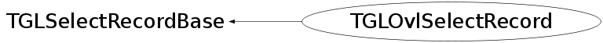

class TGLOvlSelectRecord: public TGLSelectRecordBase
Selection record for overlay objects.
Function Members (Methods)
public:
| TGLOvlSelectRecord() | |
| TGLOvlSelectRecord(UInt_t* data) | |
| TGLOvlSelectRecord(const TGLOvlSelectRecord& rec) | |
| virtual | ~TGLOvlSelectRecord() |
| static TClass* | Class() |
| UInt_t | TGLSelectRecordBase::GetCurrItem() const |
| UInt_t | TGLSelectRecordBase::GetItem(Int_t i) const |
| UInt_t* | TGLSelectRecordBase::GetItems() const |
| Float_t | TGLSelectRecordBase::GetMaxZ() const |
| Float_t | TGLSelectRecordBase::GetMinZ() const |
| Int_t | TGLSelectRecordBase::GetN() const |
| Int_t | TGLSelectRecordBase::GetNLeft() const |
| TGLOverlayElement* | GetOvlElement() const |
| virtual TClass* | IsA() const |
| void | TGLSelectRecordBase::NextPos() |
| TGLOvlSelectRecord& | operator=(const TGLOvlSelectRecord& rec) |
| void | TGLSelectRecordBase::PrevPos() |
| virtual void | Reset() |
| void | TGLSelectRecordBase::ResetPos() |
| virtual void | Set(UInt_t* data) |
| void | SetOvlElement(TGLOverlayElement* e) |
| void | TGLSelectRecordBase::SetRawOnly(UInt_t* data) |
| virtual void | ShowMembers(TMemberInspector& insp) |
| virtual void | Streamer(TBuffer& b) |
| void | StreamerNVirtual(TBuffer& b) |
protected:
| void | TGLSelectRecordBase::CopyItems(UInt_t* items) |
Class Charts
{kind=link}
{kind=link}
{kind=link}
{kind=link}
